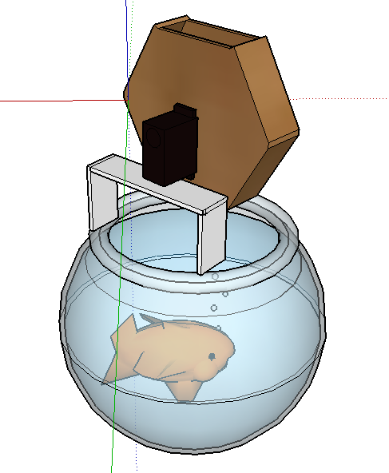

My Main Fishtank Design

This is my main concept for my fishtank project. I will use a servo rotating motor linked up to either a website or an app, and It will rotate the acryllic octagon that is attached to it.
The ogtagon will have an opening on one of the sides and when the side is facing down the food inside will drop into the bowl. I think my main challenges will be making the machine accurate,
enough to make sure it is consistant, and to create the app. I don't think that these problems are too bad as they are definatly managable.